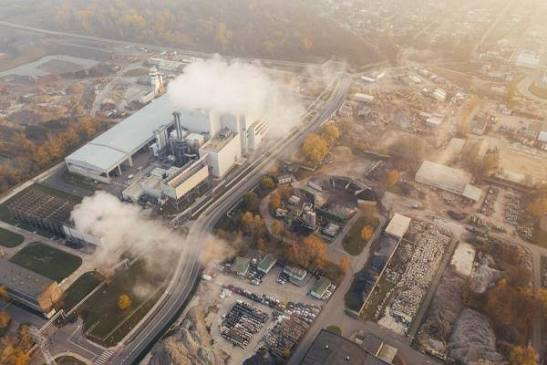
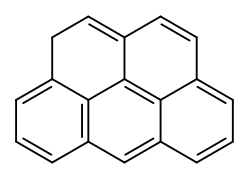
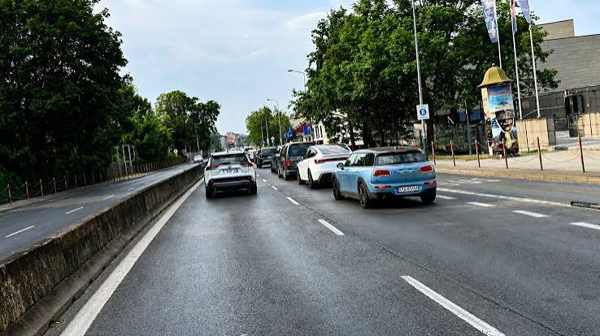

Polska od lat znajduje się w czołówce krajów Unii Europejskiej o najwyższym stężeniu pyłów zawieszonych i rakotwórczego benzo(a)pirenu. Sprawdź, skąd bierze się smog i jak chronić przed nim siebie oraz bliskich.
Portal edukacyjny o jakości powietrza i ochronie środowiska
Najgroźniejsze związki chemiczne i pyły monitorowane przez stacje pomiarowe GIOŚ.

Mieszanina cząstek stałych i ciekłych zawieszonych w powietrzu. Pył PM2.5 ma średnicę mniejszą niż 2,5 mikrometra (ok. 1/30 grubości ludzkiego włosa) i przenika bezpośrednio do pęcherzyków płucnych oraz krwiobiegu.

Silnie toksyczny i rakotwórczy związek z grupy wielopierścieniowych węglowodorów aromatycznych. Powstaje podczas niepełnego spalania węgla, drewna oraz odpadów w domowych piecach o niskiej sprawności.

Brunatny, drażniący gaz powstający w wysokich temperaturach w silnikach spalinowych (zwłaszcza wysokoprężnych). W słoneczne dni reaguje z innymi związkami, tworząc trujący ozon przypowierzchniowy.
Skład chemiczny smogu zależy od pory roku, temperatury powietrza oraz rodzaju paliw.
Występuje od listopada do marca podczas mroźnej, bezwietrznej pogody i inwersji termicznej. Nazwa pochodzi od wielkiego smogu w Londynie z grudnia 1952 roku, który pochłonął tysiące ofiar.
Skład i warunki:Dwutlenek siarki (SO₂), tlenki azotu, tlenek węgla, sadza oraz wysokie stężenia pyłów zawieszonych PM10 i PM2.5 przy dużej wilgotności powietrza.
Pojawia się w gorące, słoneczne dni letnie (głównie w lipcu i sierpniu) w dużych aglomeracjach o dużym natężeniu ruchu samochodowego. Ogranicza widoczność i powoduje łzawienie oczu.
Skład i warunki:Tlenki azotu, tlenek węgla, lotne związki organiczne oraz ozon troposferyczny (O₃) powstający pod wpływem silnego promieniowania UV.
Tworzy się w wyniku reakcji chemicznych zachodzących w atmosferze między gazami (amoniakiem z rolnictwa, SO₂, NOₓ), które łączą się w mikroskopijne cząstki wtórnego pyłu zawieszonego.
Zagrożenie:Utrzymuje się nad dolinami i kotlinami przez wiele dni, przenosząc zanieczyszczenia na dziesiątki kilometrów poza miasta.
Udział głównych sektorów gospodarki i gospodarstw domowych w emisji pyłów PM2.5.
Spaliny uwalniane z kominów o wysokości poniżej 40 m nie ulegają rozproszeniu i opadają bezpośrednio na sąsiednie ulice. Głównym problemem są pozaklasowe kotły („kopciuchy”) oraz spalanie mokrego drewna i mułów węglowych.
Wąska zabudowa miejska tworzy tzw. kaniony uliczne, w których gromadzą się spaliny. Oprócz rur wydechowych (zwłaszcza starszych silników Diesla) ogromnym źródłem pyłu jest ścieranie klocków hamulcowych i opon.
Zimą zimne, ciężkie powietrze zalega przy ziemi, a nad nim znajduje się warstwa cieplejszego powietrza działająca jak pokrywka. W miastach położonych w kotlinach (np. Kraków, Nowy Sącz, Żywiec) smog zostaje uwięziony.
Długotrwała ekspozycja na smog skraca średnią długość życia mieszkańców Polski o blisko 10 miesięcy.
przedwczesnych zgonów rocznie w Polsce z powodu zanieczyszczenia powietrza
całkowitej emisji rakotwórczego benzo(a)pirenu pochodzi z domowych pieców
przekroczenia norm dobowych pyłu PM10 podczas alarmów smogowych w sezonie grzewczym
Przewlekłe stany zapalne oskrzeli, zaostrzenie astmy, POChP, częste infekcje u dzieci oraz zwiększone ryzyko zachorowania na raka płuc nawet u osób niepalących.
Ultradrobnocząsteczkowe pyły przenikają do krwi, przyspieszając miażdżycę, powodując nadciśnienie, zawały serca, udary mózgu oraz problemy z pamięcią i koncentracją.
Zakwaszenie gleb i wód powierzchniowych, uszkodzenia igliwia i liści drzew, spadek plonów w rolnictwie oraz przyspieszona korozja elewacji i zabytków architektury.
Najedź na zdjęcie, aby przeczytać opis, lub kliknij dowolny kadr, aby otworzyć podgląd pełnoekranowy.
Rzetelne portale monitoringowe oraz działania ograniczające emisję zanieczyszczeń.
Główny Inspektorat Ochrony Środowiska prowadzi ogólnopolską sieć automatycznych stacji pomiarowych mierzących w czasie rzeczywistym stężenia PM10, PM2.5, NO₂, SO₂ i O₃.
Sprawdź mapę jakości powietrza GIOŚ →Europejska Agencja Środowiska oraz Światowa Organizacja Zdrowia publikują coroczne zestawienia jakości powietrza w miastach Europy oraz normy bezpieczne dla zdrowia ludzi.
Otwórz portal Europejskiej Agencji Środowiska →Wymiana starych kotłów na pompy ciepła lub ogrzewanie gazowe, termomodernizacja budynków, wybór komunikacji miejskiej i roweru oraz korzystanie z oczyszczaczy powietrza z filtrem HEPA.
Polski Alarm Smogowy – poradniki →